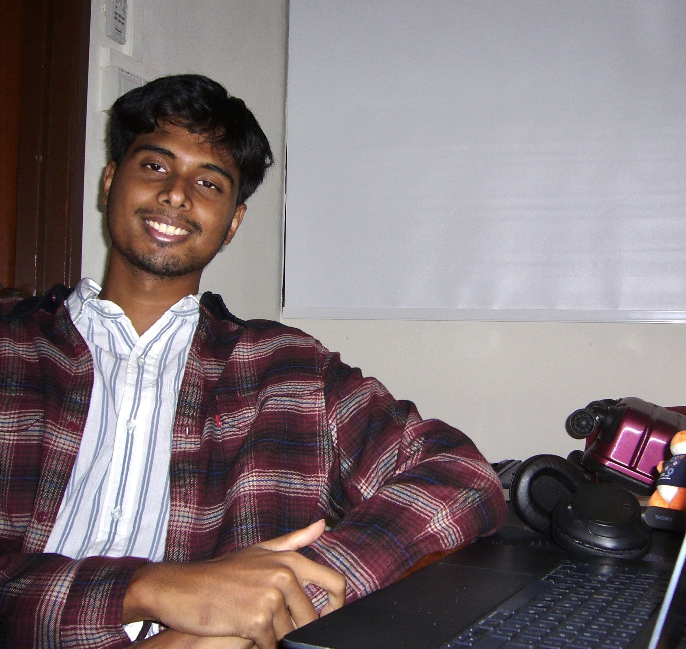

Hello! I'm Hari, a senior undergradute student from India.
My research interests are primarily in mathematical models of human decision-making, specifically under limitations and varying circumstances. Broadly, I tend to revolve around computational cognitive science, cooperative intelligence, and alignment.
Currently, I'm an IRIS Fellow with the CoSi Lab at NUS, advised by Prof. Tan Zhi Xuan. My work aims to improve agentic assistance to boundedly-rational users.
I also study the effect of near-misses in controllable environments, advised by Prof. Nandan Sudarsanam at WSAI, IIT Madras. Previously, I was a research intern on an IIT Madras-UIUC project, analyzing models for the early detection of Dementia in Alzheimer's patients.
I spend my free time debating competitively, playing chess, and taking pretty photos.
Elsewhere
- Email hariganeshtangirala [at] gmail [dot] com
- LinkedIn /in/hariganeshtangirala
- Twitter @bayesianhouse